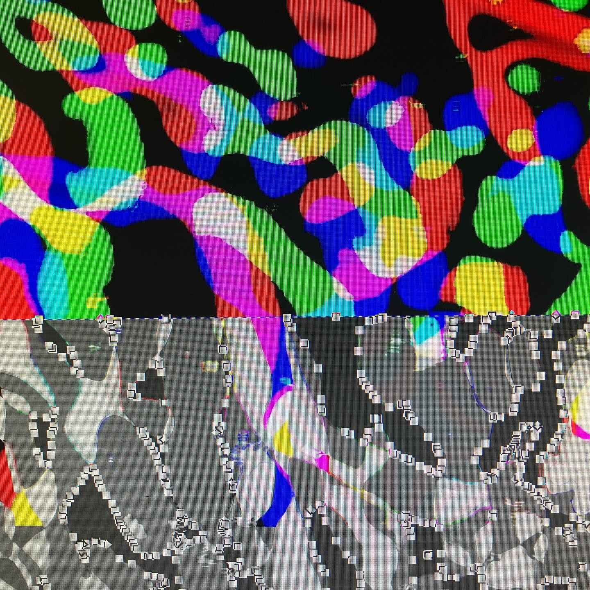
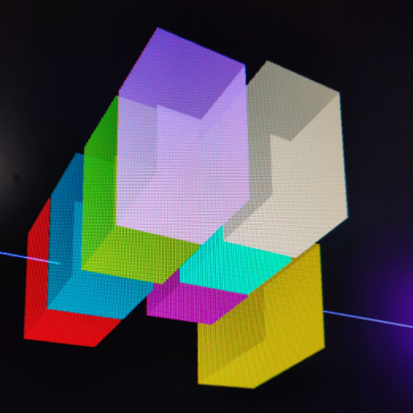
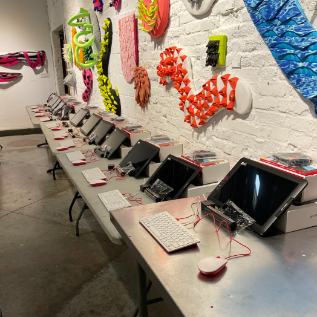
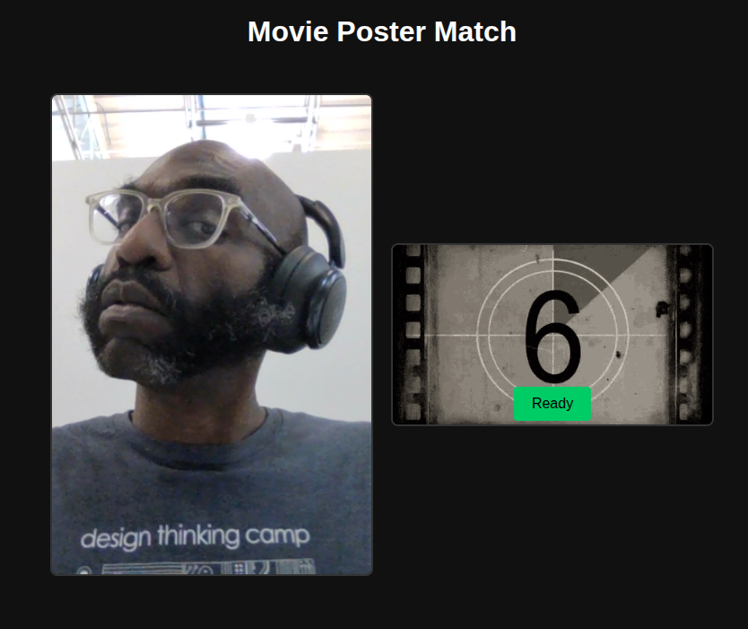

Digital Garage + 934 Gallery
934 Cleveland Ave.
Columbus, Ohio
In 2023, I joined the board of 934 Gallery and helped to increase the capabilities of the space for showing interactive and digital art. Our efforts culminated in the opening of the Digital Garage, a new gallery space dedicated to digital art.



With a grant from the Columbus Arts Council, we extended the Digital Garage initiative to develop a summer youth program for Columbus schools students.


Touchdesigner used to map a volume of virtual space to the real space of the Garage.
Student workstations set up before a session.
It was important to me that at the end of the program, students got to take the equipment home.
memory.audio
 Learn Anything
Learn Anything
memory.audio -- bite-sized audio lessons on demand.
The app is referred to as an LLM wrapper. It leverages OpenAI's developer API for moderation and inference as well as GCP text to speech to generate audio. The core functionality is composed as a chain of prompts,each transforming the user input until a final asset is produced.

How It Works
- First, users submit a learning goal as a text prompt. User input is cleaned then validated using openAI's moderation API.
- A valid learning goal is scoped down enough to be satisfied by a single 3-4 minute audio lesson.
- The app uses the openAI completions API to generate an initial script.
- Next, the script is augmented with SSML markup which configures the Speech To Text (STT) system to give more naturalistic output; inserting pauses and explicit enunciations.
- Finally, Google Cloud Platform STT takes the augmented script and generates audio.
Future Plans
Plans for this product have always been more than a single feature. In the next iteration of the idea, I plan to build a comprehensive lesson planning module. Currently, learning goals are validated for a sufficiently narrow scope that the requested goal can be satisfied by a single audio lesson. As I used the app, I was generating audio lessons before a shift that were related to areas I wanted to learn more about and meditate on.
Movie Night

Movie Night matches a user's webcam frame to a movie poster.
Watch- Kaggle dataset: MovieLens 25M
-
Feature extraction pipeline:
- pose detection with Mediapipe
- regional color histograms
- Vector embedding: FAISS
- Search: FAISS index
The app began as an entry into the Grow With X 24hr AI hackathon in July 2025. It has become a classroom for me; giving me real world understanding of some basic ML concepts.
The theme of the hackathon was movies. At the time, I had spent months thinking about and building SaaS applications, so this theme really challenged my creativity. I settled on the concept of being immersed in the world of a film. A film you could watch again and again even playing in the background while you work; it's an indication that what you want is to actually live in the world created by the filmmaker.
Matching webcam images to the posters would require representing each poster as a vector of numbers. When the user sends a webcam frame to the server, it is converted into a vector in the same way. Then we need a way to compare the user supplied image with all of the movie poster vectors and return the closest match.
When we turn each poster into a vector, we end up with a high dimensional space. Just like plotting a point in three dimensions (x, y & z), we can plot points in a space with around 66 dimensions. If done correctly, points that are closer together have a higher similarity. The following image is a tSNE diagram (t-distributed Stochastic Neighbor Embedding). It's a way to take the plots we do in our 66 dimensional space and reducing that down to only 2 dimensions while preserving the similarity of points closer together.